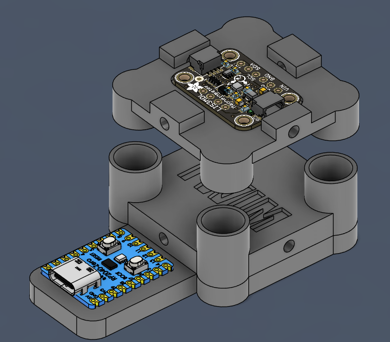
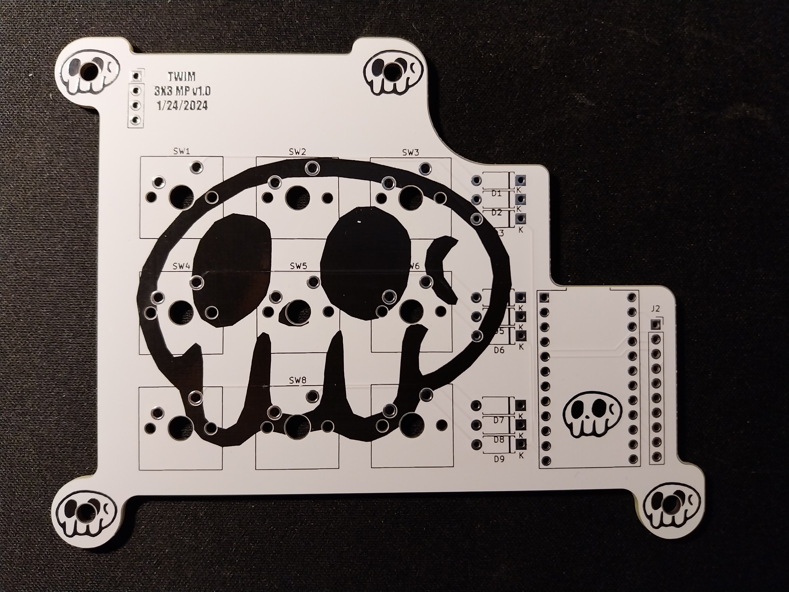
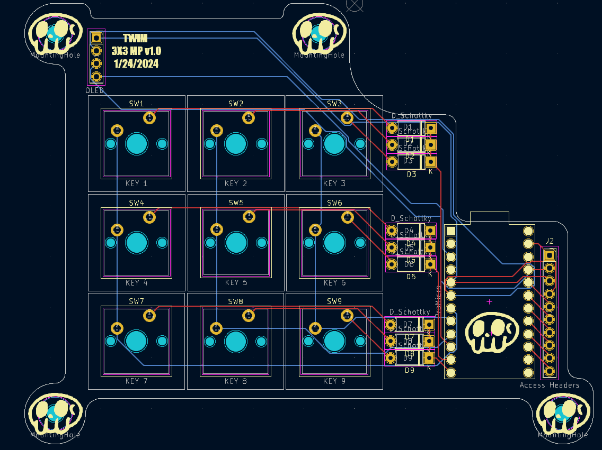
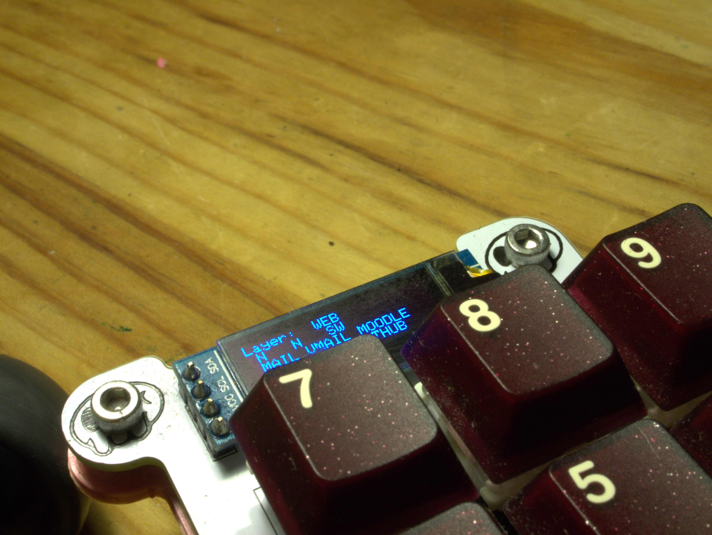
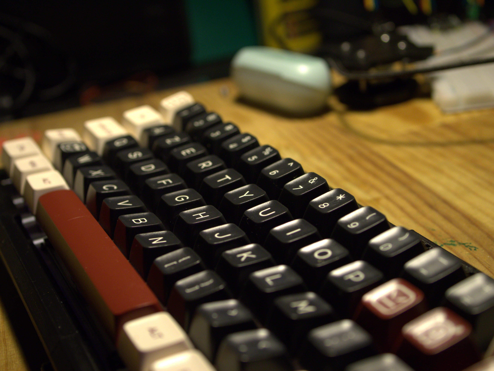
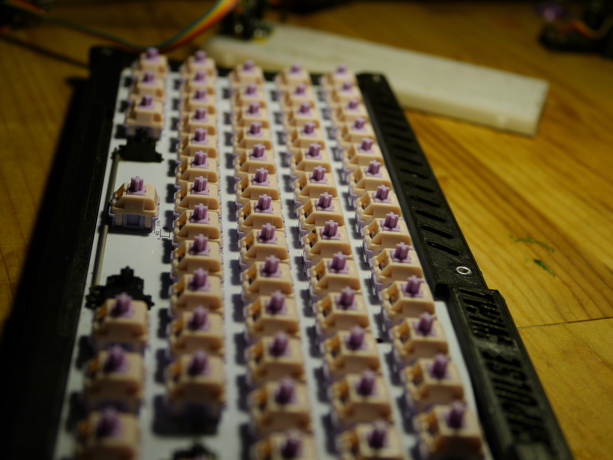
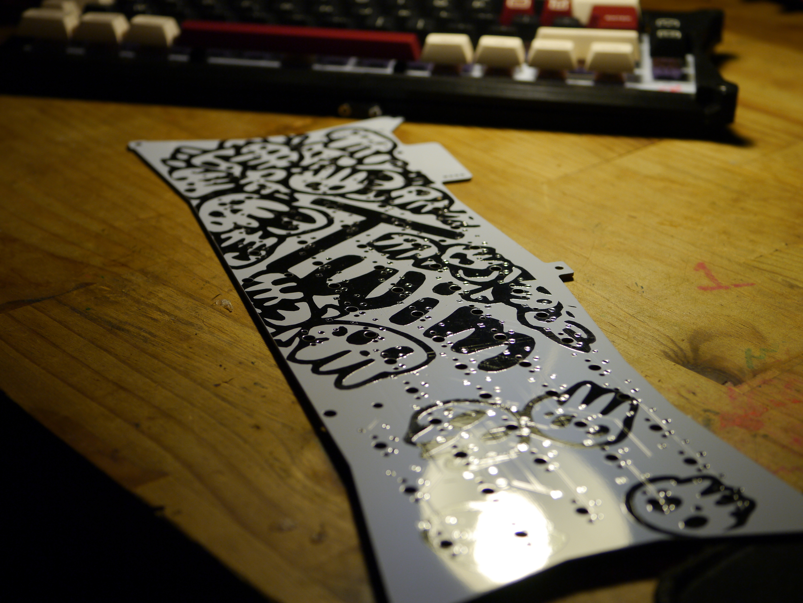
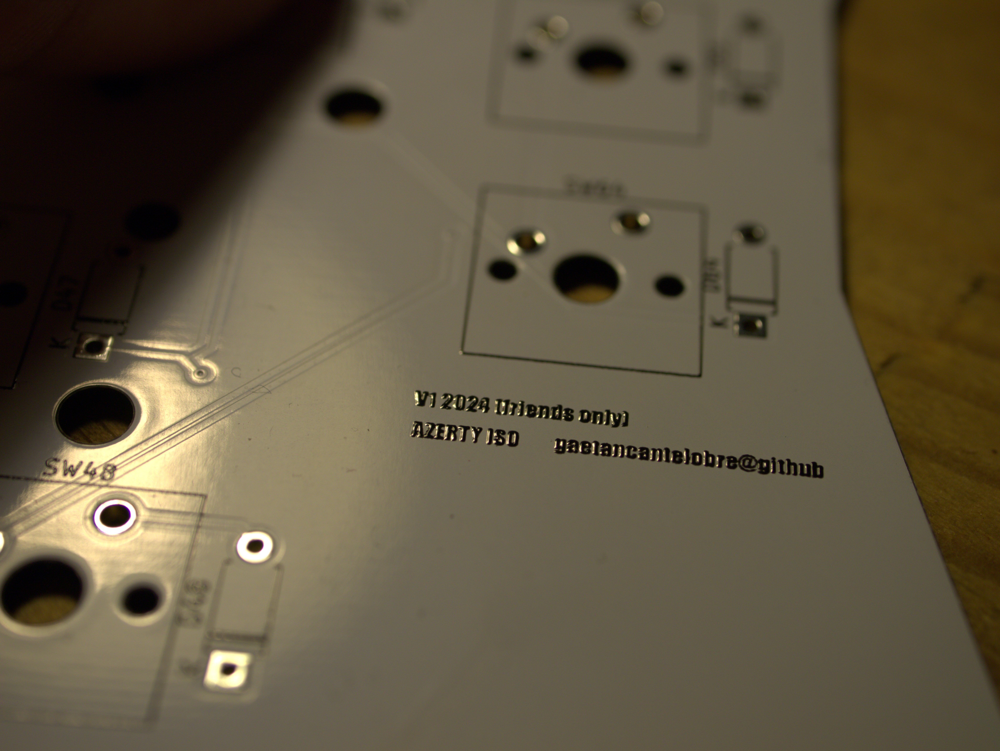

Human Interface Devices (HID)
Custom input hardware: from programmable macropads to 3D CAD controllers and ergonomic mechanical keyboards.
3 DOF Space Mouse for CAD Navigation
Skills: CAD, Embedded Systems, Sensor Fusion
For most of my projects, I design enclosures and mechanical brackets for 3D printing using Autodesk Fusion 360. A 3D space mouse is a specialized controller designed for CAD workflows, allowing you to manipulate viewport cameras with tactile ergonomics. Instead of holding down three or four mouse and modifier keys simultaneously to pan, orbit, and zoom, you intuitively manipulate a single physical knob as if holding the virtual 3D part itself.
Commercial name-brand space mice are expensive, which prompted me to design a DIY alternative. Both revisions are driven by a Raspberry Pi Pico.
Version 1: Powered by an Adafruit LIS3MDL 3-axis magnetometer suspended on calibrated mechanical springs over a neodymium magnet. Deflection in pitch, roll, and elevation changes the magnetic field gradient, which firmware translates into HID camera gestures.


While functional, magnetic suspension proved vulnerable to external magnetic interference (e.g. steel screws, desk frames).
Version 2: Implemented a high-precision analog joystick paired with a digital rotary encoder for zoom scaling and mode switching, offering superior repeatable precision and robustness.



Source code and CAD models are available on GitHub.
QMK Programmable MacroPad
Skills: PCB Design, CAD, Firmware, JLCPCB Assembly
Relying daily on an ultra-compact 60% keyboard meant frequently resorting to awkward multi-key combinations for volume, media controls, and function keys. To streamline my workflow, I designed a dedicated 9-key macro controller from schematic to casing.
The board boasts a fully custom PCB running open-source QMK firmware paired with AutoHotkey macros. A crisp 128 × 32 I2C OLED display on top dynamically outputs the active layer name and button mappings. Driven by an Arduino Pro Micro (ATmega32U4), the two-layer PCB was designed in KiCad and manufactured by JLCPCB.




TWIM IMPULSE - Fully Custom AZERTY Mechanical Keyboard
Skills: PCB Design, CAD, Embedded Systems, HID Firmware
As a French typist accustomed to 60% mechanical keyboards, almost all custom aftermarket PCB kits were strictly designed for physical ANSI/QWERTY key placements. Juggling mismatched physical key legends and French AZERTY OS layouts between home and university was disruptive to typing speed. I resolved to build a native physical AZERTY 60% keyboard.
Powered by an ATmega32U4, I developed lightweight firmware utilizing TinyUSB_Mouse_and_Keyboard libraries for direct, low-overhead HID control. This unlocked complete freedom to build custom macros, media binds, and mouse emulation within 32 KB of microcontroller memory. Designed in KiCad with bespoke silkscreen artwork and produced by JLCPCB.



